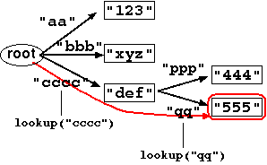
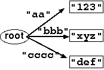
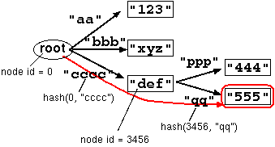

Tree-like Constant Database, or tcdb, is an extension to D. J. Bernstein's cdb file format. tcdb is a hash table that can contain a tree structure whose edges and nodes can be represented as key/value pairs. tcdb is suitable to represent directory structures or sparse matrices. tcdb is also suitable for storing a large number of key/value pairs that have common prefix. Like an original cdb file, a tcdb file is immutable, i.e. adding to or changing items requires rebuilding the entire file.
Merits:
Shortcomings:
Table of Contents:
Here is a sample tree structure that tcdb can represent (Figure 1).

Figure 1. Sample tree structure.
In this file, the root node has three child nodes.
Each node (except the root node) has a string value,
"123", "xyz" and "def"
which can be accessed via a corresponding key,
"aa", "bbb" and "cccc"
respectively.
The last child has two further child nodes
"444" and "555".
Suppose that you're trying to reach the value
"555" of the bottom-right node.
You need to start from the root node.
First, you look up with the key "cccc"
to reach the "def" node.
Then you further look up with the key "qq"
and reach the desired node.
tcdb is especially useful for storing a lot of keys that share some parts. The same function can be achieved with the original cdb, but with tcdb you can ``compress'' the keys by putting the shared parts only once.
Here is how a cdb would look like if it stores the tree strucutre above:
And this is how a tcdb looks like:"aa" -> "123" "bbb" -> "xyz" "cccc" -> "def" "cccc/ppp" -> "444" "cccc/qq" -> "555"
"aa" -> "123"
"bbb" -> "xyz"
"cccc" -> "def"
"ppp" -> "444"
"qq" -> "555"
The gain of the space becomes larger as the shared parts get longer, or the nest gets deeper. Also, tcdb is suitable for storing a large sparse matrix or multi-dimentional associative array. For example, the following array:
("aaaaa", "aaaa") -> "123"
("aaaaa", "bbbbb") -> "456"
("aaaaa", "cccccc") -> "789"
("aaaaa", "dd") -> "000"
("bbbbbb", "aaa") -> "111"
...
"aaaaa" -> ""
"aaaa" -> "123"
"bbbbb" -> "456"
"cccccc" -> "789"
"dd" -> "000"
"bbbbbb" -> ""
"aaa" -> "111"
...
tcdb is also suitable for performing a partial lookup for variable-length keys. For example, a dictionary that contains multi-word phrases with common prefixes can be represented as follows:
"new" -> "ADJ"
"york" -> "PROPER_NOUN"
"city" -> "PROPER_NOUN"
tcdb achieves compatibility with the original cdb format, i.e. you can read any cdb file with the tcdb tools, and you can also read some tcdb files with the cdb tools. The trick is that cdb files are just special cases of tcdb files representing a ``flat'' tree: all the nodes are direct descendants of the root node (Figure 2).

Figure 2. cdb structure.
Therefore, any cdb file is a valid tcdb file.
Contrary, a tcdb file whose height is 1 (i.e. all the nodes
are connected to the root) can be read/built just as a normal cdb file
with existing cdb-related tools.
cdb is a disk-based hash table that uses a 32-bit hash to efficiently
locate the value corresponding to a given key. The lookup is
performed against two tables. First, the least significant 8 bits
of a hash number is used to lookup the first table. Then the exact
hash number and its corresponding key/value pair is located from
the second table. For more details, see
cdb internals.
tcdb inherits its lookup mechanism from cdb.
The file structure of tcdb format is almost identical to that of cdb,
except one small difference: the initial value of the hash function.
In cdb format, a hash number is computed as follows:
The ID of a root node is always 0.
The ID of any other node is the file offset of the key/value pair
of that node. Therefore, a key which is directly accessible
from a root node has always the same hash with cdb
(this is how the compatilibity is achieved).
In tcdb, lookup is performed hierarchically.
A first lookup always starts from the root node, using the parent node id = 0.
This first lookup is completely identical to that of cdb.
After retrieving the value associated with that key,
a second lookup is performed using the file offset value of
the key/value pair as the parent node id.
This way, a user can ``descend'' the tree as s/he continues.
Here is an example (Figure 3).
A user is trying to reach the bottom right node by using
a sequence of string keys

It is guaranteed that the same string key with different initial
values have always distinct hashes.
So two same keys that belongs to different parent nodes are
never mixed up.
tcdb comes with utilities that perform format conversion
between text files and cdb files, just like
In tcdb, the textual representation is also extended in order to
represent hierarchical structure. Nested key/value pairs are
denoted with multiple plus signs, just like indentation. A
key/value pair that belongs to the root node is represented in the
exactly same way as cdb. This way, the compatibility with the cdb
files is maintained.
For example, a tree structure in Figure 1 can be represented
as follows:
Except the hash function,
the mechanism of building/reading tcdb is the same as that of cdb.
Threfore, the time to look up a chain of N nodes is exactly
the total time for N lookups in cdb.
Also, the size of a tcdb file is the size of
a cdb file that has the same number of the key/value pairs.
More precisely,
filesize = 2048 + (24 * the total number of nodes except the root node)
Currently, there is only a Python implementation:
This program includes basic manipulation functions for tcdb files
as well as its programming interfaces for Python.
(This is slow, but not as bad as you imagine,
as the lookup performance is mostly disk-bound.
Of course I'd be very happy if someone could write
the C version though...)
Last Modified: Sat Mar 8 09:41:57 UTC 2014
Mechanism
In cdb,
h = CDB_HASHSTART;
for (i = 0; i < length(key); i++) {
h = (h * 33) & 0xffffffff ^ key[i];
}
CDB_HASHSTART was always 5831.
In tcdb, this is
(5831 + the id of the parent node) instead.
h = CDB_HASHSTART + parent_node_id;
for (i = 0; i < length(key); i++) {
h = (h * 33) & 0xffffffff ^ key[i];
}
Look up
("cccc", "qq").
The lookup starts from the root node, whose node id is 0.
A hash is computed against this node and the first lookup key
"cccc". Then the value of the second node is
located and the lookup continues. The file offset of this second node
is, say, 3456. This is the node id of the second node.
The program computes the next hash using this id and
the next key "qq", and locate the value of
the bottom right node.
Figure 3. Sample lookup.
Extended text representation
cdbmake or cdbmake accompanied with
the origial cdb distribution.
In the text representation of a cdb file, each entry (key/value pair)
starts with a plus sign, followed by a decimal representation
of the length of the key, a comma, the length of the value,
a colon, and actual strings of the key and value separated by
'->.' Finally, an entry ends with a newline character.
+2,3:aa->123
+3,3:bbb->xyz
+4,3:cccc->def
++3,3:ppp->444
++2,3:qq->555
Performance
Implementation
pytcdb.py (11kbytes)
Command line interfaces
pytcdb.py tmake tcdbname [file1 file2 ...]
cdbmake.
pytcdb.py tdump tcdbname
cdbdump.
pytcdb.py tget tcdbname [key1 key2 ...]
pytcdb.py tmerge tcdbname [cdbfile1 cdbfile2 ...]
Programming interfaces
CDBReader class:
equivalent to cdb.init
CDBWriter class:
equivalent to cdb.cdbmake
TCDBReader class:
TCDBWriter class: